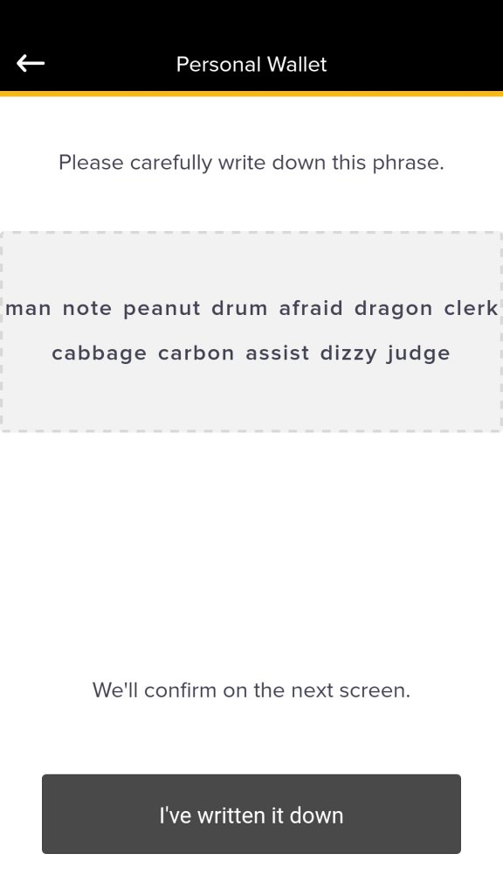
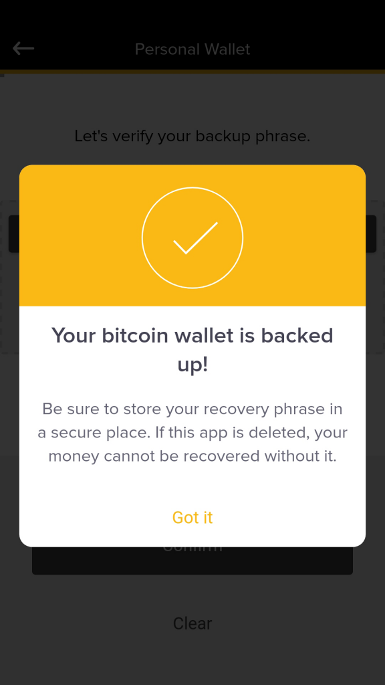

Tap on the orange band within a funded wallet to Backup the wallet.
Follow the instructions and write down the 12 words in order from left to right. This is your “recovery/backup phrase”. Note, that the backup phrase used here is for demonstration purposes only. Your unique backup phrase will be different. 
Write down your backup phrase and store it somewhere safe. Note the one above is just used for demonstration.
Once you have written down the 12 words, tap “I’ve written it down”. Next, you will be asked to verify the phrase. This is just another measure to ensure that you are backed-up properly. Complete this step by tapping the words in the order in which they appear on your hand-written backup phrase. Once you do this you should see the the backup confirmation screen.

Backup complete. Nice job!
If you ever lose your phone or get a new one you will use this phrase to verify that you are the owner of the wallet before being granted access. This is why it is important to keep the phrase safe and away from the eyes of others. Store the code as securely as you would cash or other valuables, you may lose your bitcoins forever if your device is lost, stolen or damaged and you chose not to backup. Some users laminate the paper or use some other means of keeping it safe from moisture or grime. Also, feel free to make several backup copies and store these in various safe places, e.g. bank safety deposit box, in a secure drawer, home safe, etc.